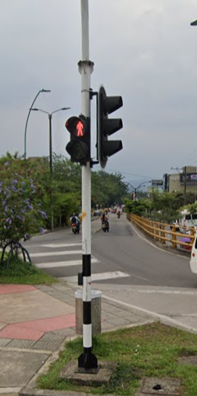

Semaforo Cerca del Centro Comercial Llanocentro
Varios ciudadanos han presentado reiterados reportes sobre el mal funcionamiento de este semáforo, el cual, debido a sus fallas,
ha generado consecuencias graves para la seguridad vial. En múltiples ocasiones, su operación defectuosa ha sido un factor que
contribuyó a accidentes, algunos de ellos con desenlaces fatales, donde personas han perdido la vida. Este problema no solo pone
en riesgo a conductores y peatones, sino que también genera caos en el tráfico, afectando la movilidad en la zona. La situación
demanda una intervención inmediata para su reparación, dado que prolongar su uso en estas condiciones podría seguir ocasionando
incidentes lamentables. Es crucial que las autoridades tomen medidas urgentes para garantizar que este semáforo opere correctamente
y cumpla su función de regular el tránsito de manera segura.
